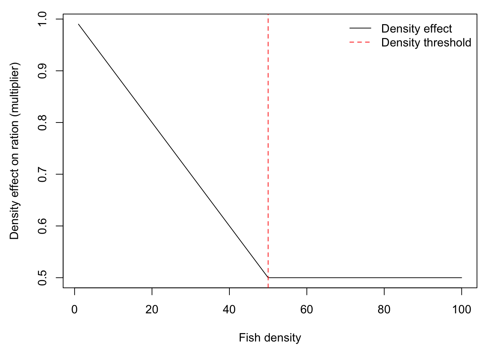

Code
# Rescale a vector to a specific
fncRescale <- function(x, to = c(0, 1), from = range(x, na.rm = TRUE, finite = TRUE)) {
(x - from[1]) / diff(from) * diff(to) + to[1]
}if any changes are made, need to re-run qmd_to_r_script() function at end, in console
Purpose: This script generates the functions called in the IBM simulation loop.
Source dependencies
Rescale a vector to a specific range…e.g., [0-1].
# Rescale a vector to a specific
fncRescale <- function(x, to = c(0, 1), from = range(x, na.rm = TRUE, finite = TRUE)) {
(x - from[1]) / diff(from) * diff(to) + to[1]
}Build bioenergetics model, equations from Hanson et al. (1997), and general approach from A. Fullerton (https://github.com/aimeefullerton/growth_regime_IBM). Currently using O. mykiss parameters because the full suite of respiration estimates does not exist for bull trout, and hence no effect of ration.
Get BioEnergetics Parameters
fncGetBioEParms <- function(spp, pred.en.dens, prey.en.dens, oxy, pff, wt.nearest,
startweights = rep(initial.mass, numFish), pvals = rep(0.5, numFish), ration = rep(0.1, numFish)){
N.sites <- nrow(wt.nearest) #here, sites are fish in each reach
N.steps <- 1 #one time step
Species <- spp
SimMethod <- 1 #method that predicts growth
Pred <- pred.en.dens #predator energy density
Oxygen <- oxy #oxygen consumed
PFF <- pff #percent indigestible prey
stab.factor <- 0.5 #stability factor for other simulation methods
epsilon <- 0.5 #also for other simulation methods
endweights <- startweights*5
TotalConsumption <- rep(100, N.sites)
pvalues <- t(matrix(round(pvals, 5)))
sitenames <- t(matrix(wt.nearest[,"pid"]))
temperature <- t(wt.nearest[,"WT"])
prey.energy.density <- t(matrix(rep(prey.en.dens, N.sites)))
ration <- t(matrix(round(ration, 5)))
return(list(
"Species" = Species,
"SimMethod" = SimMethod,
"Wstart" = startweights,
"Endweights" = endweights,
"TotalConsumption" = TotalConsumption,
"pp "= pvalues,
"Temps" = temperature,
"N.sites" = N.sites,
"N.steps" = N.steps,
"sitenames" = sitenames,
"Pred" = Pred,
"prey.energy.density" = prey.energy.density,
"Oxygen" = Oxygen,
"stab.factor" = stab.factor,
"PFF" = PFF,
"epsilon" = epsilon,
"ration" = ration)
)
}Constants, hard-coded for O. mykiss. Could alternatively do for bull trout (constants commented out) but we don’t have parameter estimates for respiration equations that would allow growth to vary by ration size.
# Constants, hard-coded - using RATION instead of p-values
fncReadConstants <- function() {
# Get consumption constants
# Cons <- data.frame(
# ConsEQ = 3,
# CA = 0.1317,
# CB = -0.1396,
# CQ = 3.0,
# CTO = 15.8,
# CTM = 17.5,
# CTL = 21.0,
# CK1 = 0.06,
# CK4 = 0.38)
#
# # Get respiration constants
# Resp <- data.frame(
# RespEQ = 1,
# RA = 0.0009,
# RB = -0.1266,
# RQ = 0.0833,
# RTO = 0,
# RTM = 0,
# RTL = 0,
# RK1 = 1,
# RK4 = 0,
# ACT = 1,
# BACT = 0,
# SDA = 0.172)
#
# # Get Excretion / Egestion Constants
# Excr <- data.frame(
# ExcrEQ = 2,
# FA = 0.212,
# FB = -0.222,
# FG = 0.631,
# UA = 0.0314,
# UB = 0.58,
# UG = -0.299)
Cons <- data.frame(
ConsEQ = 4,
CA = 0.628,
CB = -0.3,
CQ = 5,
CTO = 20,
CTM = 20,
CTL = 24,
CK1 = 0.33,
CK4 = 0.2)
# Get respiration constants
Resp <- data.frame(
RespEQ = 1,
RA = 0.00264,
RB = -0.217,
RQ = 0.06818,
RTO = 0.0234,
RTM = 0,
RTL = 25,
RK1 = 1,
RK4 = 0.13,
ACT = 9.7,
BACT = 0.0405,
SDA = 0.172)
# Get Excretion / Egestion Constants
Excr <- data.frame(
ExcrEQ = 4,
FA = 0.212,
FB = -0.222,
FG = 0.631,
UA = 0.0314,
UB = 0.58,
UG = -0.299)
# Return the Constants
return(list("Consumption" = Cons,
"Respiration" = Resp,
"Excretion" = Excr))
}Consumption, respiration, and excretion equations
# Consumption Equation 1
ConsumptionEQ1 <- function(W, TEMP, PP, PREY, CA, CB, CQ) {
CMAX <- CA * (W ** CB) #max specific feeding rate (g_prey/g_pred/d)
CONS <<- (CMAX * PP * exp(CQ * TEMP)) #specific consumption rate (g_prey/g_pred/d) - grams prey consumed per gram of predator mass per day
CONSj <<- CONS * PREY #specific consumption rate (J/g_pred/d) - Joules consumed for each gram of predator for each day
return(list("CMAX" = CMAX, "CONS" = CONS, "CONSj" = CONSj))
}
# Consumption Equation 2
ConsumptionEQ2 <- function(W, TEMP, PP, PREY, CA, CB, CTM, CTO, CQ) {
Y <- log(CQ) * (CTM - CTO + 2)
Z <- log(CQ) * (CTM - CTO)
X <- (Z ^ 2 * (1 + (1 + 40 / Y) ^ .5) ^ 2) / 400
V <- (CTM - TEMP) / (CTM - CTO)
CMAX <- CA * (W ** CB)
CONS <- CMAX * PP * (V ** X) * exp(X * (1 - V))
CONSj <- CONS*PREY
return(list("CMAX" = CMAX, "CONS" = CONS, "CONSj" = CONSj))
}
# Consumption Equation #3: Temperature Dependence for cool-cold water species
ConsumptionEQ3 <- function(W, TEMP, PP, PREY, CA, CB, CK1, CTO, CQ, CK4, CTL, CTM) {
G1 <- (1 / (CTO - CQ)) * (log((0.98 * (1 - CK1)) / (CK1 * 0.02)))
L1 <- exp(G1 * (TEMP - CQ))
KA <- (CK1 * L1) / (1 + CK1 * (L1 - 1))
G2 <- (1 / (CTL - CTM)) * (log((0.98 * (1 - CK4)) / (CK4 * 0.02)))
L2 <- exp(G2 * (CTL - TEMP))
KB <- (CK4 * L2) / (1 + CK4 * (L2 - 1))
CMAX <- CA * (W ** CB) #max specific feeding rate (g_prey/g_pred/d)
CONS <- CMAX * PP * KA * KB #specific consumption rate (g_prey/g_pred/d) - grams prey consumed per gram of predator mass per day
CONSj <- CONS * PREY #specific consumption rate (J/g_pred/d) - Joules consumed for each gram of predator for each day
return(list("CMAX" = CMAX, "CONS" = CONS, "CONSj" = CONSj))
}
# Consumption Equation 3 that gives CONS based on RATION instead of PP
ConsumptionEQ4 <- function(W, TEMP, RATION, PREY, CA, CB, CK1, CTO, CQ, CK4, CTL, CTM) {
G1 <- (1 / (CTO - CQ)) * (log((0.98 * (1 - CK1)) / (CK1 * 0.02)))
L1 <- exp(G1 * (TEMP - CQ))
KA <- (CK1 * L1) / (1 + CK1 * (L1 - 1))
G2 <- (1 / (CTL - CTM)) * (log((0.98 * (1 - CK4)) / (CK4 * 0.02)))
L2 <- exp(G2 * (CTL - TEMP))
KB <- (CK4 * L2) / (1 + CK4 * (L2 - 1))
CMAX <- CA * (W ** CB) #max specific feeding rate (g_prey/g_pred/d)
RATION[RATION >= CMAX] <- CMAX[RATION >= CMAX]
CONS <- RATION * KA * KB #specific consumption rate (g_prey/g_pred/d) - grams prey consumed per gram of predator mass per day
CONSj <- CONS * PREY #specific consumption rate (J/g_pred/d) - Joules consumed for each gram of predator for each day
return(list("CMAX" = CMAX, "CONS" = CONS, "CONSj" = CONSj))
}
# Excretion Equation 1
ExcretionEQ1 <- function(CONS, CONSj, TEMP, PP, FA, UA) {
EG <- FA * CONS # egestion (fecal waste) in g_waste/g_pred/d
U <- UA * (CONS - EG) # excretion (nitrogenous waste) in g_waste/g_pred/d
EGj <- FA * CONSj # egestion in J/g/d
Uj <- UA * (CONSj - EGj) # excretion in J/g/d
return(list("EG" = EG, "EGj" = EGj, "U" = U, "Uj" = Uj))
}
# Excretion Equation 2
ExcretionEQ2 <- function(CONS, CONSj, TEMP, PP, FA, UA, FB, FG, UB, UG) {
EG <- FA * TEMP ^ FB * exp(FG * PP) * CONS # egestion (fecal waste) in g_waste/g_pred/d
U <- UA * TEMP ^ UB * exp(UG * PP) * (CONS - EG) # excretion (nitrogenous waste) in g_waste/g_pred/d
EGj <- EG * CONSj / CONS # egestion in J/g/d
Uj <- U * CONSj / CONS # excretion in J/g/d
return(list("EG" = EG, "EGj" = EGj, "U" = U, "Uj" = Uj))
}
# Excretion Equation 3 (W/ correction for indigestible prey as per Stewart 1983)
ExcretionEQ3 <- function(CONS, CONSj, TEMP, PP, FA, UA, FB, FG, UB, UG, PFF) {
#Note: In R, "F" means "FALSE", here we use EG as the variable name for egestion instead of F (as in the FishBioE 3.0 manual)
#Note: PFF = 0 assumes prey are entirely digestible, making this essentially the same as Equation 2
PE <- FA * (TEMP ** FB) * exp(FG * PP)
PF <- ((PE - 0.1) / 0.9) * (1 - PFF) + PFF
EG <- PF * CONS # egestion (fecal waste) in g_waste/g_pred/d
U <- UA * (TEMP ** UB) * (exp(UG * PP)) * (CONS - EG) # excretion (nitrogenous waste) in g_waste/g_pred/d
EGj <- PF * CONSj # egestion in J/g/d
Uj <- UA * (TEMP ** UB) * (exp(UG * PP)) * (CONSj - EGj) # excretion in J/g/d
return(list("EG" = EG, "EGj" = EGj, "U" = U, "Uj" = Uj))
}
# Excretion Equation 3 but using RATION instead of PP
ExcretionEQ4 <- function(CONS, CONSj, TEMP, RATION, CMAX, FA, UA, FB, FG, UB, UG, PFF) {
#Note: In R, "F" means "FALSE", here we use EG as the variable name for egestion instead of F (as in the FishBioE 3.0 manual)
#Note: PFF = 0 assumes prey are entirely digestible, making this essentially the same as Equation 2
RATION[RATION >= CMAX] <- CMAX[RATION >= CMAX]
PP <- RATION / CMAX #calculating p-value based on ration and CMax inputs
PE <- FA * (TEMP ** FB) * exp(FG * PP)
PF <- ((PE - 0.1) / 0.9) * (1 - PFF) + PFF
EG <- PF * CONS # egestion (fecal waste) in g_waste/g_pred/d
U <- UA * (TEMP ** UB) * (exp(UG * PP)) * (CONS - EG) # excretion (nitrogenous waste) in g_waste/g_pred/d
EGj <- PF * CONSj # egestion in J/g/d
Uj <- UA * (TEMP ** UB) * (exp(UG * PP)) * (CONSj - EGj) # excretion in J/g/d
return(list("EG" = EG, "EGj" = EGj, "U" = U, "Uj" = Uj))
}
# Respiration Equation 1
RespirationEQ1 <- function(W, TEMP, CONS, EG, PREY, OXYGEN, RA, RB, ACT, SDA, RQ, RTO, RK1, RK4, RTL, BACT){
VEL <- (RK1 * W ^ RK4) * (TEMP > RTL) + ACT * W ^ RK4 * exp(BACT * TEMP) * (1 - 1 * (TEMP > RTL))
ACTIVITY <- exp(RTO * VEL)
S <- SDA * (CONS - EG) # proportion of assimilated energy lost to SDA in g/g/d (SDA is unitless)
Sj <- S * PREY # proportion of assimilated energy lost to SDA in J/g/d - Joules lost to digestion per gram of predator mass per day
R <- RA * (W ** RB) * ACTIVITY * exp(RQ * TEMP) # energy lost to respiration (metabolism) in g/g/d
Rj <- R * OXYGEN # energy lost to respiration (metabolism) in J/g/d - Joules per gram of predator mass per day
return(list("R" = R, "Rj" = Rj, "S" = S, "Sj" = Sj))
}
# Respiration Equation 2 (Temp dependent w/ ACT multiplier)
RespirationEQ2 <- function(W, TEMP, CONS, EG, PREY, OXYGEN, RA, RB, ACT, SDA, RTM, RTO, RQ) {
V <- (RTM - TEMP) / (RTM - RTO)
V[V < 0] <- 0.001 #AHF Added to stop errors when Water temps exceed RTM!
Z <- (log(RQ)) * (RTM - RTO)
Y <- (log(RQ)) * (RTM - RTO + 2)
X <- ((Z ** 2) * (1 + (1 + 40 / Y) ** 0.5) ** 2) / 400
S <- SDA * (CONS - EG) # proportion of assimilated energy lost to SDA in g/g/d (SDA is unitless)
Sj <- S * PREY # proportion of assimilated energy lost to SDA in J/g/d - Joules lost to digestion per gram of predator mass per day
R <- RA * (W ** RB) * ACT * ((V ** X) * (exp(X * (1 - V) ))) # energy lost to respiration (metabolism) in g/g/d
Rj <- R * OXYGEN # energy lost to respiration (metabolism) in J/g/d - Joules per gram of predator mass per day
return(list("R" = R, "Rj" = Rj, "S" = S, "Sj" = Sj))
}Calculate growth
CalculateGrowth <- function(Constants, Input) {
pred <- Input$Pred
Oxygen <- Input$Oxygen
# Initialize Fish Weights
W <- array(rep(0, (Input$N.sites * (Input$N.steps + 1))), c(Input$N.steps + 1, Input$N.sites))
W[1,] <- as.numeric(Input$Wstart[1:ncol(W)])
Growth <- array(rep(0, Input$N.sites * Input$N.steps), c(Input$N.steps, Input$N.sites))
Growth_j <- Consumpt <- Consumpt_j <- Excret <- Excret_j <- Egest <- Egest_j <- Respirat <- Respirat_j <- S.resp <- Sj.resp <- Gg_WinBioE <- Gg_ELR <- Growth
TotalC <- rep(0, Input$N.sites)
##Start Looping Through Time - for Known Consumption, solving for Weight
t = 1
for (t in 1:(Input$N.steps)) {
### Consumption
if(Constants$Consumption$ConsEQ == 1) {
Cons <- with(Constants$Consumption, ConsumptionEQ1(W[t,], Input$Temps[t,], Input$pp[t,], Input$prey.energy.density[t,], Constants$Consumption$CA, Constants$Consumption$CB, Constants$Consumption$CQ))
} else if(Constants$Consumption$ConsEQ == 2){
Cons <- with(Constants$Consumption, ConsumptionEQ2(W[t,], Input$Temps[t,], Input$pp[t,], Input$prey.energy.density[t,], Constants$Consumption$CA, Constants$Consumption$CB, Constants$Consumption$CTM, Constants$Consumption$CTO, Constants$Consumption$CQ))
} else if(Constants$Consumption$ConsEQ == 3){
Cons <- with(Constants$Consumption, ConsumptionEQ3(W[t,], Input$Temps[t,], Input$pp[t,], Input$prey.energy.density[t,], Constants$Consumption$CA, Constants$Consumption$CB, Constants$Consumption$CK1, Constants$Consumption$CTO, Constants$Consumption$CQ, Constants$Consumption$CK4, Constants$Consumption$CTL, Constants$Consumption$CTM))
} else if(Constants$Consumption$ConsEQ == 4){
Cons <- with(Constants$Consumption, ConsumptionEQ4(W[t,], Input$Temps[t,], Input$ration[t,], Input$prey.energy.density[t,], Constants$Consumption$CA, Constants$Consumption$CB, Constants$Consumption$CK1, Constants$Consumption$CTO, Constants$Consumption$CQ, Constants$Consumption$CK4, Constants$Consumption$CTL, Constants$Consumption$CTM))
}
TotalC <- TotalC + Cons$CONS * W[t,]
# store daily consumption
Consumpt[t,] <- as.numeric(Cons$CONS)
Consumpt_j[t,] <- as.numeric(Cons$CONSj)
### Excretion / Egestion
if(Constants$Excretion$ExcrEQ == 1) {
ExcEgest <- with(Constants$Excretion, ExcretionEQ1(Cons$CONS, Cons$CONSj, Input$Temps[t,], Input$pp[t,], Constants$Excretion$FA, Constants$Excretion$UA))
} else if (Constants$Excretion$ExcrEQ == 2) {
ExcEgest <- with(Constants$Excretion, ExcretionEQ2(Cons$CONS, Cons$CONSj, Input$Temps[t,], Input$pp[t,], Constants$Excretion$FA, Constants$Excretion$UA, Constants$Excretion$FB, Constants$Excretion$FG, Constants$Excretion$UB, Constants$Excretion$UG ))
} else if (Constants$Excretion$ExcrEQ == 3) {
ExcEgest <- with(Constants$Excretion, ExcretionEQ3(Cons$CONS, Cons$CONSj, Input$Temps[t,], Input$pp[t,], Constants$Excretion$FA, Constants$Excretion$UA, Constants$Excretion$FB, Constants$Excretion$FG, Constants$Excretion$UB, Constants$Excretion$UG, Input$PFF) )
} else if (Constants$Excretion$ExcrEQ == 4) {
ExcEgest <- with(Constants$Excretion, ExcretionEQ4(Cons$CONS, Cons$CONSj, Input$Temps[t,], Input$ration[t,], Cons$CMAX, Constants$Excretion$FA, Constants$Excretion$UA, Constants$Excretion$FB, Constants$Excretion$FG, Constants$Excretion$UB, Constants$Excretion$UG, Input$PFF) )
}
# store daily excretion and egestion
Excret[t,] <- as.numeric(ExcEgest$U)
Excret_j[t,] <- as.numeric(ExcEgest$Uj)
Egest[t,] <- as.numeric(ExcEgest$EG)
Egest_j[t,] <- as.numeric(ExcEgest$EGj)
### Respiration
if(Constants$Respiration$RespEQ == 1) {
Resp <- with(Constants$Respiration, RespirationEQ1(W[t,], Input$Temps[t,], Cons$CONS, ExcEgest$EG, Input$prey.energy.density[t,], Input$Oxygen, Constants$Respiration$RA, Constants$Respiration$RB, Constants$Respiration$ACT, Constants$Respiration$SDA, Constants$Respiration$RQ,Constants$Respiration$RTO, Constants$Respiration$RK1, Constants$Respiration$RK4, Constants$Respiration$RTL, Constants$Respiration$BACT))
} else if (Constants$Respiration$RespEQ == 2) {
Resp <- with(Constants$Respiration, RespirationEQ2(W[t,], Input$Temps[t,], Cons$CONS, ExcEgest$EG, Input$prey.energy.density[t,], Input$Oxygen, Constants$Respiration$RA, Constants$Respiration$RB, Constants$Respiration$ACT, Constants$Respiration$SDA, Constants$Respiration$RTM, Constants$Respiration$RTO, Constants$Respiration$RQ))
}
#store daily respiration results
Respirat[t,] <- as.numeric(Resp$R)
Respirat_j[t,] <- as.numeric(Resp$Rj)
S.resp[t,] <- as.numeric(Resp$S)
Sj.resp[t,] <- as.numeric(Resp$Sj)
### Now calculate Growth
# growth in J/g/d - Joules allocated to growth for each gram of predator on each day
Gj <- Cons$CONSj - Resp$Rj - ExcEgest$EGj - ExcEgest$Uj - Resp$Sj
G <- Cons$CONS - Resp$R - ExcEgest$EG - ExcEgest$U - Resp$S
# growth in g/d - Grams of predator growth each day
Growth[t,] <- as.numeric(Gj * W[t,]) / pred
Growth_j[t,] <- as.numeric(Gj)
# growth in g/g/d (DailyWeightIncrement divided by fishWeight)
Gg_WinBioE[t,] <- as.numeric(Growth[t,] / W[t,])
# growth in g/g/d (DailyWeightIncrement divided by average of fish start end weights)
Gg_ELR[t,] <- Growth[t,] / ((as.numeric(Input$Wstart[1:ncol(W)]) + W[t,]) / 2)
# Calculate absolute weight at time t+1
W[t + 1,] <- W[t,] + Growth[t,]
} # End of cycles through time
# Return Results
return(list(
"TotalC" = TotalC,
"W" = W,
"Growth" = Growth,
"Gg_WinBioE" = Gg_WinBioE,
"Gg_ELR" = Gg_ELR,
"Growth_j" = Growth_j,
"Consumption" = Consumpt,
"Consumption_j" = Consumpt_j,
"Excretion" = Excret,
"Excretion_j" = Excret_j,
"Egestion" = Egest,
"Egestion_j" = Egest_j,
"Respiration" = Respirat,
"Respiration_j" = Respirat_j,
"S.resp" = S.resp,
"Sj.resp" = Sj.resp
))
}The main bioenergetics function that calls other functions
BioE <- function (Input, Constants) {
# for simulation method =1 (we have p-vals, and want to solve for weights
if (Input$SimMethod == 1) {
# Method 1: Calculate Growth from p-values and Temperatures
Results <- CalculateGrowth(Constants, Input)
W <- Results$W
Growth <- Results$Growth
} else{
# We don't know p-values, but need to iteratively solve for them
# Method 2 or 3: Calculate P-values from Total Growth or Consumption
# Need to assume p-values are constant with time
# initialize first guess p-values of .5
Input$pp <- array(rep(0.5, Input$N.sites * Input$N.step),
c(Input$N.step, Input$N.sites))
# set error at high value, iterate until it's small
Error <- rep(99, Input$N.sites)
iteration <- 0
### Interate until error is less than .1
while(max(abs(Error)) > Input$epsilon)
{
iteration <- iteration + 1
Results<- CalculateGrowth(Constants, Input)
W <- Results$W
TConsumption<- Results$TotalC
# Find error (depending on which thing on which we're converging), and
# and come up with new estimate for average p-value
if (Input$SimMethod == 2) {
Error <- (W[Input$N.step + 1,] - Input$Endweights)
# Delta is the amount by which we'll change the p-value (prior to
# scaling by the stability factor
Delta <- (Input$Endweights) / (W[Input$N.step + 1,]) *
Input$pp[1,] - Input$pp[1,]
Pnew <- as.vector(Input$p[1,] + Input$stab.factor * Delta)
# Guard against negative p-values
for (i in 1:length(Pnew)) {Pnew[i] = max(0, Pnew[i])}
} else
{
Error <- (TConsumption - Input$TotalConsumption) / Input$TotalConsumption
Delta <- Input$TotalConsumption/TConsumption * Input$p[1,] - Input$p[1,]
Pnew <- as.vector(Input$p[1,] + Input$stab.factor * Delta)
}
# Update for user, show p-values and error, see if we're converging
for (i in 1:Input$N.step) {Input$p[i,] <- as.numeric(Pnew)}
print(paste("Pnew =",Pnew, " Error =", Error))
print(paste("iteration = ", iteration))
} # end of while statement
}
Results$pp = Input$pp
# We're done. Let's return the results!
return(Results)
}Look up growth based on actual WT, ration, and weight of fish
# PIDs: vector of fish IDs, or NA for all fish
# fish: data frame with columns pid, weight, ration, patch ("warm" or "cold")
# t: current day of year
fncGrowthFish <- function(PIDs = NA, fish, t) {
# sequences must match the dimensions of the pre-calculated wt.growth array
wt.seq <- seq(0.1, 25, 0.1) # water temperature (250 values)
ra.seq <- seq(0.02, 0.17, 0.001) # ration (151 values)
ma.seq <- seq(1, 1500, 1) # fish mass (1500 values)
if (any(is.na(PIDs))) {
td <- fish[, c("pid", "weight", "ration", "patch")] # all fish
} else {
td <- fish[fish$pid %in% PIDs, c("pid", "weight", "ration", "patch")] # specific fish
}
td[, "weight"][td[, "weight"] < 1] <- 1 # minimum lookup weight is 1 g
if (nrow(td) > 0) {
n <- nrow(td)
growth <- watemp <- vector(length = n)
for (x in 1:n) {
temp <- get_patchtemp(t, td[x, "patch"]) # temperature at fish's current patch
wt.idx <- which.min(abs(wt.seq - temp)) # nearest water temperature index
ra.idx <- which.min(abs(ra.seq - td[x, "ration"])) # nearest ration index
ma.idx <- which.min(abs(ma.seq - td[x, "weight"])) # nearest mass index
growth[x] <- wt.growth[wt.idx, ra.idx, ma.idx]
watemp[x] <- wt.seq[wt.idx]
}
lookup <- data.frame(
pid = td[, "pid"],
weight = td[, "weight"],
ration = td[, "ration"],
patch = td[, "patch"],
WT.actual = sapply(td[, "patch"], function(p) get_patchtemp(t, p)),
WT = watemp,
growth = growth
)
return(lookup)
} else {
message("No fish IDs provided")
return(NA)
}
}Look up best possible patch for growth based on current temperatures across both habitat patches
# fweight: fish mass in grams
# t: current day of year
# ration_warm, ration_cold: ration sizes available in each patch
fncGrowthPossible <- function(fweight, t, ration_warm, ration_cold) {
# sequences must match the dimensions of the pre-calculated wt.growth array
wt.seq <- seq(0.1, 25, 0.1) # water temperature (250 values)
ra.seq <- seq(0.02, 0.17, 0.001) # ration (151 values)
ma.seq <- seq(1, 1500, 1) # fish mass (1500 values)
fw <- max(1, min(4500, round(fweight))) # clamp weight to lookup range
ma.idx <- which.min(abs(ma.seq - fw))
patches <- c("warm", "cold")
rations <- c(ration_warm, ration_cold)
growth <- watemp <- vector(length = 2)
for (x in 1:2) {
temp <- get_patchtemp(t, patches[x])
wt.idx <- which.min(abs(wt.seq - temp))
ra.idx <- which.min(abs(ra.seq - rations[x]))
growth[x] <- wt.growth[wt.idx, ra.idx, ma.idx]
watemp[x] <- wt.seq[wt.idx]
}
lookup <- data.frame(
patch = patches,
weight = rep(fweight, 2),
ration = rations,
WT.actual = c(get_patchtemp(t, "warm"), get_patchtemp(t, "cold")),
WT = watemp,
growth = growth
)
best_patch <- patches[which.max(growth)]
return(list(lookup = lookup, best_patch = best_patch))
}Fish switch habitats/move with a probability that increases with the growth advantage. One parameter controls the strength of the threshold: τ (sensitivity; small = nearly deterministic, large = nearly random).
Write softmax function
fncMoveSoftmax <- function(gwarm, gcold, tau = 0.001) {
exp(gwarm / tau) / (exp(gwarm / tau) + exp(gcold / tau))
}Plot the probability of choosing the warm patch given different values of tau, across a range of between-patch differences in growth potential.
# Softmax: P(warm) = exp(g_warm/tau) / (exp(g_warm/tau) + exp(g_cold/tau))
# Equivalently: sigmoid of (g_warm - g_cold) / tau
tau_vals <- c(0.001, 0.003, 0.005, 0.01, 0.025)
g_diff_seq <- seq(-0.03, 0.03, length.out = 400)
softmax_df <- map_dfr(tau_vals, function(tau) {
tibble(
g_diff = g_diff_seq,
p_warm = 1 / (1 + exp(-g_diff / tau)),
tau_lab = paste0("τ = ", tau)
)
}) |>
mutate(tau_lab = factor(tau_lab, levels = paste0("τ = ", tau_vals)))
# Observed g_diff range from the earlier gdiff_df (pooled across weights)
obs_range <- c(-0.02395578, 0.00791707)
ggplot(softmax_df, aes(x = g_diff, y = p_warm, color = tau_lab)) +
# Shade the observed g_diff range from the simulation
annotate("rect",
xmin = obs_range[1], xmax = obs_range[2],
ymin = -Inf, ymax = Inf,
fill = "grey85", alpha = 0.6) +
annotate("text", x = mean(obs_range), y = 0.9,
label = "Observed\ng_diff range", size = 3, color = "grey40",
hjust = 0.5) +
geom_hline(yintercept = 0.5, linetype = "dashed", color = "grey50") +
geom_vline(xintercept = 0, linetype = "dashed", color = "grey50") +
geom_line(linewidth = 0.9) +
scale_color_brewer(palette = "RdYlBu", direction = -1) +
scale_y_continuous(labels = scales::percent_format(),
breaks = seq(0, 1, 0.25)) +
scale_x_continuous(labels = scales::label_number(accuracy = 0.01)) +
annotate("text", x = 0.028, y = 0.58, label = "warm\nbetter", size = 3,
color = "grey40", hjust = 1) +
annotate("text", x = -0.028, y = 0.58, label = "cold\nbetter", size = 3,
color = "grey40", hjust = 0) +
labs(
x = "g_warm − g_cold (g/g/d)",
y = "P(choose warm patch)",
color = "Sensitivity (τ)",
title = "Softmax patch selection probability",
subtitle = "Grey band = observed growth difference range in simulation"
) +
theme_bw()
tau = 0.001: Near step-function — almost deterministic. Fish choose the better patch >99% of the time when |g_diff| > ~0.005tau = 0.003: Mostly deterministic at the summer peak (g_diff ≈ −0.025), but probabilistic near the zero-crossing — similar in effect to the perceptual noise approachtau = 0.005: Substantial uncertainty even at moderate growth differencestau = 0.010-0.025: Gradual, shallow curves — even a strong cold-patch advantage (~0.025) only shifts P(warm) to ~25–30%; choices are largely stochastic throughoutFor this simulation (given the range of observed growth differences), τ = 0.001–0.003 is the meaningful range — it preserves the deterministic signal in summer while allowing individual probabilistic variation near the switching crossover. τ much above 0.005 makes the patch signal mostly invisible to the decision rule, i.e., patch selection becomes increasingly random.
viewof tau = Inputs.range([0.001, 0.05], {
value: 0.005,
step: 0.001,
label: "Sensitivity (τ)"
})
import { Plot } from "@observablehq/plot"
// Observed g_diff range from simulation (passed from R)
obsMin = -0.02395578
obsMax = 0.00791707
gDiffSeq = Array.from({ length: 400 }, (_, i) => -0.03 + i * (0.06 / 399))
curveData = gDiffSeq.map(g => ({
g_diff: g,
p_warm: 1 / (1 + Math.exp(-g / tau))
}))
Plot.plot({
width: 600,
height: 400,
marginLeft: 60,
x: {
tickFormat: d => d.toFixed(2)
},
y: {
domain: [0, 1],
ticks: [0, 0.25, 0.5, 0.75, 1]
},
marks: [
Plot.axisX({ label: "g_warm − g_cold (g/g/d)", fontSize: 13, tickFormat: d => d.toFixed(2) }),
Plot.axisY({ label: "P(choose warm patch)", fontSize: 13, tickFormat: d => (d * 100).toFixed(0) + "%" }),
// Shaded observed g_diff range
Plot.rectY([{}], {
x1: obsMin, x2: obsMax,
y1: 0, y2: 1,
fill: "#d0d0d0",
opacity: 0.6
}),
Plot.text([{ x: (obsMin + obsMax) / 2, y: 0.9 }], {
x: "x", y: "y",
text: () => "Observed\ng_diff range",
fill: "#888",
fontSize: 11,
textAnchor: "middle"
}),
// Reference lines
Plot.ruleY([0.5], { stroke: "#aaa", strokeDasharray: "4 3" }),
Plot.ruleX([0], { stroke: "#aaa", strokeDasharray: "4 3" }),
// Softmax curve
Plot.line(curveData, {
x: "g_diff",
y: "p_warm",
stroke: "steelblue",
strokeWidth: 2.5
}),
// Annotations
Plot.text([{ x: 0.028, y: 0.58 }], { x: "x", y: "y", text: () => "warm better", fill: "#888", fontSize: 11, textAnchor: "end" }),
Plot.text([{ x: -0.028, y: 0.58 }], { x: "x", y: "y", text: () => "cold better", fill: "#888", fontSize: 11, textAnchor: "start" })
],
title: `Softmax patch selection (τ = ${tau.toFixed(3)})`
})Create and test functions to impose size-dependent cost of movement.
As in Fullerton model, energetic cost to movement is applied as a percentage of possible growth potential. But this seems pretty crude, and I don’t think this would leads to higher penalties/thresholds for smaller fish…thus, smaller fish are just as likely to be mobile as larger fish.
fncMoveCost <- function(gr = fish$growth) {
return(abs(gr) * move_cost)
}Three other options.
Option 1: Inverse power decay
c = scaling constant; a = decay exponent (higher = steeper drop-off)fncMoveCost_power <- function(w, c = 0.025, a = 1) {
c / w^a
}Option 2: Logistic (sigmoid) transition
c_max (small fish) to ~0 (large fish).w50 = inflection weight (g); k = steepness of transitionw50 sets the mobility threshold, k sets how sharp it isfncMoveCost_logistic <- function(w, c_max = 0.05, k = 3, w50 = 2) {
c_max / (1 + exp(k * (w - w50)))
}Option 3: Allometric metabolic scaling
b = 0.75 is the standard metabolic scaling exponent.c = scaling constant; b = metabolic exponent (default 0.75)fncMoveCost_allometric <- function(w, c = 0.025, b = 0.75) {
c * w^(b - 1) # = c * w^(-0.25): slower decay than Option 1
}Compare functional forms of inverse power decay, logistic transition, and allometric metabolic scaling.
w_seq <- seq(0.1, 150, by = 0.1)
cost_df <- tibble(weight = w_seq) |>
mutate(
`Option 1: Power (c=0.025, a=1)` = fncMoveCost_power(weight),
`Option 2: Logistic (cmax=0.05, w50=2)` = fncMoveCost_logistic(weight),
`Option 3: Allometric (c=0.025, b=0.75)` = fncMoveCost_allometric(weight)
) |>
pivot_longer(-weight, names_to = "option", values_to = "cost")
# Reference lines: max observed |g_diff| and typical patch advantage range
# g_ref <- gdiff_df |> summarise(
# max_adv = max(abs(g_diff)),
# p75_adv = quantile(abs(g_diff[g_diff != 0]), 0.75)
# )
p1 <- ggplot(cost_df, aes(x = weight, y = cost, color = option)) +
# Shade <1g region (essentially immobile zone)
annotate("rect", xmin = 0, xmax = 1, ymin = -Inf, ymax = Inf,
fill = "grey85", alpha = 0.6) +
annotate("text", x = 0.5, y = 0.095, label = "<1g\nimmobile\nzone",
size = 2.8, color = "grey40", hjust = 0.5) +
# Reference lines for typical patch growth differences
# geom_hline(yintercept = g_ref$max_adv, linetype = "dashed", color = "grey40") +
# geom_hline(yintercept = g_ref$p75_adv, linetype = "dotted", color = "grey40") +
# annotate("text", x = 148, y = g_ref$max_adv + 0.002,
# label = "Max |g_diff|", size = 3, hjust = 1, color = "grey40") +
# annotate("text", x = 148, y = g_ref$p75_adv + 0.002,
# label = "75th pctile |g_diff|", size = 3, hjust = 1, color = "grey40") +
geom_line(linewidth = 0.9) +
scale_color_brewer(palette = "Dark2") +
scale_y_continuous(limits = c(0, 0.1)) +
scale_x_continuous(breaks = c(1, 10, 25, 50, 100, 150)) +
geom_vline(xintercept = 1, linetype = "dotted", color = "grey50") +
labs(
x = "Fish weight (g)",
y = "Movement cost (g/g/d)",
color = NULL,
title = "Size-dependent movement cost functions",
subtitle = "Cost must exceed patch growth difference to prevent movement"
) +
theme(legend.position = "bottom") +
guides(color = guide_legend(ncol = 1))
p2 <- p1 + xlim(0, 5)
fig <- ggpubr::ggarrange(
p1 + labs(title = NULL, subtitle = NULL),
p2 + labs(title = NULL, subtitle = NULL),
nrow = 1, common.legend = TRUE, legend = "bottom"
)
ggpubr::annotate_figure(
ggpubr::annotate_figure(fig,
top = ggpubr::text_grob(
"Cost must exceed patch growth difference to prevent movement",
size = 10, color = "grey40"
)
),
top = ggpubr::text_grob(
"Size-dependent movement cost functions",
face = "bold", size = 13
)
)
| Size range | Power | Logistic | Allometric |
|---|---|---|---|
| <1g | Cost >> max g_diff → immobile | Cost >> max g_diff → immobile | Cost ≥ max g_diff → immobile |
| 1-5g | Drops sharply below max g_diff, mobile but costly | Remains near c_max, still strongly suppressed | Stays above 75th pctile g_diff, still costly |
| 10-25g | Near-negligible (<0.003) | Near-negligible (<0.001) | Moderate (~0.010), still a meaningful penalty |
| >50g | Essentially free | Essentially free | Still ~0.007 — cost persists into large fish |
Power and allometric forms seem like the most biologically plausible. The key difference is that the power function asymptotes to 0, whereas the allometric function asymptotes to values >0.
fncMoveCost_power seems like a reasonably biologically realistic form. Repeat the simulation but with different parameter values
w_seq <- seq(0.1, 150, by = 0.1)
# variable a
cost_df <- tibble(weight = w_seq) |>
mutate(
`Option 1: Power (c=0.025, a=1)` = fncMoveCost_power(weight, c=0.025, a=1),
`Option 2: Power (c=0.025, a=1.5)` = fncMoveCost_power(weight, c=0.025, a=1.5),
`Option 3: Power (c=0.025, a=2)` = fncMoveCost_power(weight, c=0.025, a=2)
) |>
pivot_longer(-weight, names_to = "option", values_to = "cost")
p1 <- ggplot(cost_df, aes(x = weight, y = cost, color = option)) +
# Shade <1g region (essentially immobile zone)
annotate("rect", xmin = 0, xmax = 1, ymin = -Inf, ymax = Inf,
fill = "grey85", alpha = 0.6) +
annotate("text", x = 0.5, y = 0.095, label = "<1g\nimmobile\nzone",
size = 2.8, color = "grey40", hjust = 0.5) +
geom_line(linewidth = 0.9) +
scale_color_brewer(palette = "Dark2") +
scale_y_continuous(limits = c(0, 0.1)) +
scale_x_continuous(breaks = c(1, 10, 25, 50, 100, 150)) +
geom_vline(xintercept = 1, linetype = "dotted", color = "grey50") +
labs(
x = "Fish weight (g)",
y = "Movement cost (g/g/d)",
color = NULL,
title = "Variable a: decay exponent",
subtitle = "Changes how quickly movement costs decay with size"
) +
theme(legend.position = "bottom") +
guides(color = guide_legend(ncol = 1))
p1 <- p1 + xlim(0, 5)
# variable c
cost_df <- tibble(weight = w_seq) |>
mutate(
`Option 1: Power (c=0.025, a=1)` = fncMoveCost_power(weight, c=0.025, a=1),
`Option 2: Power (c=0.05, a=1)` = fncMoveCost_power(weight, c=0.05, a=1),
`Option 3: Power (c=0.1, a=1)` = fncMoveCost_power(weight, c=0.1, a=1)
) |>
pivot_longer(-weight, names_to = "option", values_to = "cost")
p2 <- ggplot(cost_df, aes(x = weight, y = cost, color = option)) +
# Shade <1g region (essentially immobile zone)
annotate("rect", xmin = 0, xmax = 1, ymin = -Inf, ymax = Inf,
fill = "grey85", alpha = 0.6) +
annotate("text", x = 0.5, y = 0.095, label = "<1g\nimmobile\nzone",
size = 2.8, color = "grey40", hjust = 0.5) +
geom_line(linewidth = 0.9) +
scale_color_brewer(palette = "Dark2") +
scale_y_continuous(limits = c(0, 0.1)) +
scale_x_continuous(breaks = c(1, 10, 25, 50, 100, 150)) +
geom_vline(xintercept = 1, linetype = "dotted", color = "grey50") +
labs(
x = "Fish weight (g)",
y = "Movement cost (g/g/d)",
color = NULL,
title = "Variable c: scaling constant",
subtitle = "Changes the size of the immobile zone"
) +
theme(legend.position = "bottom") +
guides(color = guide_legend(ncol = 1))
p2 <- p2 + xlim(0, 5)
ggpubr::ggarrange(
p1, p2,
nrow = 1
)
fncMoveCost_power with c = 0.025 and a = 1 seems like a reasonable starting place…although note that cost of movement is basically negligible at weights > 5g
But the allometric scaling function appears to have the greatest support in the literature. See Schmidt-Nielsen (1972, Science), Ohlberger et al. (2005, J. Exp. Zoo.), and Ohlberger et al. (2006, J. Comp. Phys. B): showed how energetic cost of movement scales with body size within and across species using allometric scaling functions.
w_seq <- seq(0.1, 150, by = 0.1)
# variable a
cost_df <- tibble(weight = w_seq) |>
mutate(
`Option 1: Allometric (c=0.025, b=0.75)` = fncMoveCost_allometric(weight, c=0.025, b=0.75),
`Option 2: Allometric (c=0.025, b=0.50)` = fncMoveCost_allometric(weight, c=0.025, b=0.50),
`Option 3: Allometric (c=0.025, b=0.25)` = fncMoveCost_allometric(weight, c=0.025, b=0.25)
) |>
pivot_longer(-weight, names_to = "option", values_to = "cost")
p1 <- ggplot(cost_df, aes(x = weight, y = cost, color = option)) +
# Shade <1g region (essentially immobile zone)
annotate("rect", xmin = 0, xmax = 1, ymin = -Inf, ymax = Inf,
fill = "grey85", alpha = 0.6) +
annotate("text", x = 0.5, y = 0.095, label = "<1g\nimmobile\nzone",
size = 2.8, color = "grey40", hjust = 0.5) +
geom_line(linewidth = 0.9) +
scale_color_brewer(palette = "Dark2") +
scale_y_continuous(limits = c(0, 0.1)) +
scale_x_continuous(breaks = c(1, 10, 25, 50, 100, 150)) +
geom_vline(xintercept = 1, linetype = "dotted", color = "grey50") +
labs(
x = "Fish weight (g)",
y = "Movement cost (g/g/d)",
color = NULL,
title = "Variable b: metabolic exponent",
subtitle = "Changes how quickly costs decay w/ size"
) +
theme(legend.position = "bottom") +
guides(color = guide_legend(ncol = 1))
p1 <- p1 + xlim(0, 5)
# variable c
cost_df <- tibble(weight = w_seq) |>
mutate(
`Option 1: Allometric (c=0.025, b=0.75)` = fncMoveCost_allometric(weight, c=0.025, b=0.75),
`Option 2: Allometric (c=0.05, b=0.75)` = fncMoveCost_allometric(weight, c=0.05, b=0.75),
`Option 3: Allometric (c=0.1, b=0.75)` = fncMoveCost_allometric(weight, c=0.1, b=0.75)
) |>
pivot_longer(-weight, names_to = "option", values_to = "cost")
p2 <- ggplot(cost_df, aes(x = weight, y = cost, color = option)) +
# Shade <1g region (essentially immobile zone)
annotate("rect", xmin = 0, xmax = 1, ymin = -Inf, ymax = Inf,
fill = "grey85", alpha = 0.6) +
annotate("text", x = 0.5, y = 0.095, label = "<1g\nimmobile\nzone",
size = 2.8, color = "grey40", hjust = 0.5) +
geom_line(linewidth = 0.9) +
scale_color_brewer(palette = "Dark2") +
scale_y_continuous(limits = c(0, 0.1)) +
scale_x_continuous(breaks = c(1, 10, 25, 50, 100, 150)) +
geom_vline(xintercept = 1, linetype = "dotted", color = "grey50") +
labs(
x = "Fish weight (g)",
y = "Movement cost (g/g/d)",
color = NULL,
title = "Variable c: scaling constant",
subtitle = "Changes the ~size of the immobile zone"
) +
theme(legend.position = "bottom") +
guides(color = guide_legend(ncol = 1))
p2 <- p2 + xlim(0, 5)
ggpubr::ggarrange(
p1, p2,
nrow = 1
)
Show c = 0.025 and b = 0.6 across full range of weights
cost_df <- tibble(weight = w_seq) |>
mutate(
`Allometric (c=0.025, b=0.6)` = fncMoveCost_allometric(weight, c=0.025, b=0.6)
) |>
pivot_longer(-weight, names_to = "option", values_to = "cost")
ggplot(cost_df, aes(x = weight, y = cost, color = option)) +
# Shade <1g region (essentially immobile zone)
annotate("rect", xmin = 0, xmax = 1, ymin = -Inf, ymax = Inf,
fill = "grey85", alpha = 0.6) +
# annotate("text", x = 0.5, y = 0.095, label = "<1g\nimmobile\nzone",
# size = 2.8, color = "grey40", hjust = 0.5) +
geom_line(linewidth = 0.9) +
scale_color_brewer(palette = "Dark2") +
scale_y_continuous(limits = c(0, 0.065)) +
scale_x_continuous(breaks = c(1, 10, 25, 50, 100, 150)) +
geom_vline(xintercept = 1, linetype = "dotted", color = "grey50") +
labs(
x = "Fish weight (g)",
y = "Movement cost (g/g/d)",
color = NULL
) +
theme(legend.position = "bottom") +
guides(color = guide_legend(ncol = 1))
Create functions to representing density-dependent food availability. I.e., reduce ration size in patches by patch density.
Ration size decreases linearly with fish density, up to some threshold above which there is no effect of there is no effect of density of ration size. Fullerton uses 1 fish per m^2 of as the upper threshold. Here, I use an arbitrary MaxDensity4Growth, but we can change this to a value that makes sense for our model. Fullerton’s IBM calculates this scalar, then multiplies by densities after movement to compute experienced/realized ration.
MaxDensity4Growth <- 50 # growth is not depressed further above this density (currently this is arbitary)
fdens_raw <- fdens <- seq(from = 1, to = 100, by = 1) # create sequence of fish density
fdens[fdens > MaxDensity4Growth] <- MaxDensity4Growth # high densities cap out at MaxDensity4Growth
density.effect <- fncRescale((1 - c(fdens, 0.01, MaxDensity4Growth)), c((0.5),1)) # calculate density effect scalar
density.effect <- density.effect[-c(length(density.effect), (length(density.effect) - 1))] #remove the last 2 temporary values
par(mar = c(4.5,4.5,1,1))
plot(density.effect ~ fdens_raw, type = "l", xlab = "Fish density", ylab = "Density effect on ration (multiplier)")
abline(v = MaxDensity4Growth, col = "red", lty = 2)
legend("topright", legend = c("Density effect", "Density threshold"), col = c("black", "red"), lty = c(1,2), bty = "n")
Hyperbolic (Beverton-Holt style) reduction in food availability, i.e., scramble competition. This function can allow the strength of competition to differ among habitats.
Choice of K should depend on range of possible densities… K is the sensitive parameter and will substantially affect results.
fncDensityRation <- function(fish_pop, R_warm, R_cold, k_warm = 50, k_cold = 50) {
fish_pop %>%
mutate(
R_base = if_else(patch == "warm", R_warm, R_cold),
k = if_else(patch == "warm", k_warm, k_cold),
ration = R_base * k / (k + density)
) %>%
select(-R_base, -k)
}Visualize how ration scales with density under different values of k to help calibrate the parameter. Both patches have the same baseline ration, so curves are identical
# Use actual R_warm and R_cold from the session as the baseline
R_warm <- get_patchration(1, "warm")
R_cold <- get_patchration(1, "cold")
expand.grid(
density = 1:200,
k = c(10, 25, 50, 100, 200),
patch = c("warm", "cold")
) %>%
mutate(
R_base = if_else(patch == "warm", R_warm, R_cold),
ration = R_base * k / (k + density),
k_lab = factor(paste0("k = ", k), levels = paste0("k = ", sort(unique(k))))
) %>%
ggplot(aes(x = density, y = ration, color = k_lab)) +
geom_line() +
geom_hline(aes(yintercept = R_base), linetype = "dashed", color = "grey50") +
facet_wrap(~ patch, labeller = label_both) +
labs(
x = "Fish density (N per patch)",
y = "Realized ration (g)",
color = "Half-saturation\ndensity (k)",
title = "Density-dependent ration reduction",
caption = "Dashed line = baseline ration (no density effect)"
)
Here is a simpler formulation, where ration size is distributed evenly across all individuals (pure scramble competition) and food supply within a patch is fixed. I.e., ration size of 0.1 g is evenly distributed among all fish in a patch. If we use this, it would probably make sense to define sub-patches (feeding stations) within the larger patches.
fncDensityRation_ld <- function(fish_pop, R_warm, R_cold) {
fish_pop %>%
mutate(food = if_else(patch == "warm", R_warm, R_cold),
ration = food / density
) %>%
select(-food)
}
# set up objects as they would appear in the simulation loop
R_warm <- get_patchration(1, "warm")
R_cold <- get_patchration(1, "cold")
fish_pop <- bind_rows(
tibble(strategy = "resident_warm",
patch = "warm",
weight = pmax(1, rnorm(100, 0.1, 0)),
density = c(1:100)),
tibble(strategy = "resident_cold",
patch = "cold",
weight = pmax(1, rnorm(100, 0.1, 0)),
density = c(1:100))) %>%
mutate(pid = row_number(),
ration = if_else(patch == "warm", ration_warm, ration_cold))
# fish_pop
# for example, competition more intense in warm habitat
fish_pop <- fncDensityRation_ld(fish_pop, R_warm, R_cold)
fish_pop %>%
ggplot(aes(x = density, y = ration, color = patch)) +
geom_line() +
scale_color_manual(values = c("warm" = 2, "cold" = 4)) +
theme_bw() +
xlab("Fish density") +
ylab("Ration")
Fish experience mortality based on their size (cumulative experience) and instantaneous growth rate (measure of current experience). Smaller fish with lower growth rates more likely to die (sampled probabilistically at each time step). However, the effect of growth on survival diminishes as fish increase in size, i.e., survival for larger fish is less sensitive to growing conditions. Letcher et al. (2025, CJFAS) showed that the probability of negative growth strongly increased with fish age and size. They suggest that larger fish are more likely to recover from periods of mass loss, whereas smaller individuals may incur mortality.
Inputs:
df: data frame of fish table with only the survivorsminprob: smallest probability any fish can have of dying in any time step, before accounting for growth effectsb: controls steepness of the base size-survival curveb_interact: controls steepness of weight buffering on negative growth; smaller values = growth effects persist to larger sizes. Default 0.1 means buffering is near-complete ~50g, i.e., no effect of growth >50g.rescale: controls the relative effect of growth rates on survival. As minprob declines, you need a larger rescale value to generate meaningful variation in survival across the range of observed growth ratesNotes:
fncSurvive <- function(df, minprob = 0.96, b = 1, b_interact = 0.1, rescale = 0.01){
# df: data frame of fish table with only the survivors, e.g., fish[fish$survive == 1, c("weight", "growth")]
# minprob: smallest probability any fish can have of dying in any time step
# b: controls steepness of the base size-survival curve
# b_interact: controls steepness of weight buffering on negative growth; smaller values = growth
# effects persist to larger sizes. Default 0.1 means buffering is near-complete ~50g, i.e., no effect of growth >50g.
# rescale: controls the relative effect of growth rates on survival. As minprob declines, you need a larger rescale value to generate meaningful variation in survival across the range of observed growth rates
# Weights
w <- df$weight # weight of fish that are alive at this time step
# Base size-survival curve: 0 for tiny fish, approaches 1 for large fish (controlled by b)
w_scale <- 1 - 1 / exp(b * w)
v <- minprob + (1 - minprob) * w_scale
# Growth during this time step that reflects recent conditions (i.e., a hungry/stressed fish may behave in ways that make it more vulnerable to predation, etc.)
g <- df$growth
g <- fncRescale(g, to = c(-rescale, rescale))
# Weight x growth interaction: larger fish are buffered from negative growth penalties
# (controlled independently from base curve via b_interact).
# Small fish bear the full cost of negative growth; positive growth benefits are size-independent.
w_buf <- 1 - 1 / exp(b_interact * w)
g_effect <- ifelse(g < 0, g * (1 - w_buf), g)
# Amount of food eaten in previous time step (better survival if bellies full b/c hunkered down somewhere)
# f <- df$pvals
# f <- fncRescale(f, to = c(-0.001, 0.001))
# Probability of survival
prb.srv <- v + g_effect #+ f
prb.srv[prb.srv > 1] <- 1 # set upper bound at 1
# Sample from binomial distribution with probabilities of prb.srv to determine which fish survive this time step
survivors <- rbinom(n = nrow(df), size = 1, prob = prb.srv)
return(list(prb.srv, survivors))
#return(survivors)
}As an example, plot daily survival probabilities based on fish size and instantaneous growth
df <- expand_grid(
weight = seq(from = 0, to = 100, by = 0.1),
growth = seq(from = -0.03, to = 0.03, by = 0.005)#,
#pvals = seq(from = 0, to = 1, by = 0.1)
)
surv.list <- fncSurvive(df)
df <- df %>% mutate(prsurv = surv.list[[1]],
survivors = surv.list[[2]])
p1 <- df %>% #filter(pvals == 0.1) %>%
ggplot() +
geom_line(aes(x = weight, y = prsurv, color = as_factor(growth))) +
xlim(0,5) + theme_bw() +
xlab("Fish weight (g)") + ylab("Daily survival probability") +
labs(color = "Instantaneous\ngrowth (g/g/d)", title = "Weight: 0-5g", subtitle = "survival increases with fish size")
p2 <- df %>% #filter(pvals == 0.1) %>%
ggplot() +
geom_line(aes(x = weight, y = prsurv, color = as_factor(growth))) +
xlim(10,50) + ylim(0.996,1) + theme_bw() +
xlab("Fish weight (g)") + ylab("Daily survival probability") +
labs(color = "Instantaneous\ngrowth (g/g/d)", title = "Weight: 10-50g", subtitle = "effect of growth diminishes for larger fish")
ggpubr::ggarrange(p1, p2, nrow = 1, common.legend = TRUE, legend = "right")
Show how b_interact affects weight x growth buffering: as b_interact gets smaller, growth effects on survival persist longer
# Compare b_interact values
df_comp <- expand_grid(
weight = seq(0, 50, by = 0.2),
growth = c(-0.03, 0.03),
b_interact = c(0.01, 0.05, 0.1, 0.5, 1.0)
) %>%
group_by(b_interact) %>%
mutate(prsurv = fncSurvive(
tibble(weight = weight, growth = growth),
minprob = 0.96, b = 1, b_interact = unique(b_interact)
)[[1]]) %>%
ungroup()
p1 <- df_comp %>%
filter(growth %in% c(-0.03, 0.03)) %>%
mutate(growth_label = ifelse(growth < 0, "Negative growth (−0.03)", "Positive growth (+0.03)")) |>
ggplot(aes(x = weight, y = prsurv, color = as_factor(b_interact), linetype = growth_label)) +
geom_line(linewidth = 0.7) +
theme_bw() +
scale_linetype_manual(values = c("dashed", "solid")) +
xlab("Fish weight (g)") + ylab("Survival probability") +
labs(color = "b_interact", linetype = "Growth",
title = "Effect of b_interact")
p2 <- df_comp %>%
filter(growth %in% c(-0.03, 0.03)) %>%
mutate(growth_label = ifelse(growth < 0, "Negative growth (−0.03)", "Positive growth (+0.03)")) |>
ggplot(aes(x = weight, y = prsurv, color = as_factor(b_interact), linetype = growth_label)) +
geom_line(linewidth = 0.7) +
theme_bw() +
coord_cartesian(ylim = c(0.989, 1)) +
scale_linetype_manual(values = c("dashed", "solid")) +
xlab("Fish weight (g)") + ylab("Survival probability") +
labs(color = "b_interact", linetype = "Growth",
title = "Zoomed in: high surival")
ggpubr::ggarrange(p1, p2, nrow = 1, common.legend = TRUE, legend = "right")
Explore how different values of b_interact impact cumulative seasonal survival probability, i.e., over a 90 day/3 month period:
df_comp <- expand_grid(
weight = c(0.5, 1, 2, 5, 10, 20, 50),
growth = c(-0.03, 0.03),
b_interact = c(0.01, 0.05, 0.1, 0.5, 1.0)
) %>%
group_by(b_interact) %>%
mutate(prsurv = fncSurvive(
tibble(weight = weight, growth = growth),
minprob = 0.96, b = 1, b_interact = unique(b_interact)
)[[1]]) %>%
ungroup() %>%
mutate(seasonal = prsurv^90)
# Focus: survival gap between worst and best growth, by weight and b_interact
df_gap <- df_comp %>%
group_by(weight, b_interact) %>%
summarise(
seasonal_worst = min(seasonal),
seasonal_best = max(seasonal),
gap = seasonal_best - seasonal_worst
) %>%
ungroup()
# plot seasonal survival by growth and weight
df_comp %>%
mutate(
growth_label = case_when(
growth == -0.03 ~ "Negative (−0.03)",
growth == 0.03 ~ "Positive (+0.03)"
),
b_label = paste0("b_interact = ", b_interact)
) %>%
ggplot(aes(x = weight, y = seasonal, color = as_factor(b_interact), linetype = growth_label)) +
geom_line(linewidth = 0.8) +
geom_point(size = 2) +
scale_x_log10(breaks = c(0.5, 1, 2, 5, 10, 20, 50)) +
scale_y_continuous(labels = scales::percent_format(accuracy = 1)) +
theme_bw() +
xlab("Fish weight (g, log scale)") +
ylab("90-day survival") +
labs(color = "b_interact",
title = "Seasonal survival by growth, weight, and b_interact",
subtitle = "Larger b_interact prolongs survival costs of slow growth")
# plot difference between
ggplot(df_gap, aes(x = weight, y = gap, color = as_factor(b_interact))) +
geom_line(linewidth = 0.8) +
geom_point(size = 2) +
scale_x_log10(breaks = c(0.5, 1, 2, 5, 10, 20, 50)) +
scale_y_continuous(labels = scales::percent_format(accuracy = 1)) +
theme_bw() +
xlab("Fish weight (g, log scale)") +
ylab("90-day survival gap\n(best − worst growth)") +
labs(color = "b_interact",
title = "Seasonal survival gap between the fastest and slowest growing fish",
subtitle = "Growth-driven survival gaps are greatest for small (but not the smallest) fish")
Because our bioenergetics-based IBM tracks fish size in terms of weight, we first need a function to convert weight to length, then another function to convert length to fecundity (number of eggs). We are making the simplifying assumption that the number of eggs laid is the number of fry hatching out of the gravel. Then we allow the size/growth based daily survival to thin the population.
First, we need a length-weight relationship to back calculate length from weight (b/c fecundity by body size relationships are typically parameterized in terms of length). Equation from Simpkins and Hubert (1996, Journal of Freshwater Ecology), but add random noise (sigma):
\[ log_{10}W = -5.023 + 3.024*log_{10}L + \sigma \]
# length in mm
# weight in grams
fncLW <- function(values, input = c("lengths", "weights"), sigma = 0) {
# values: vector of lengths (mm) or weights (g)
# input: type of data in 'values'; output will be the other type
# sigma: residual SD on the log10(weight) scale from the LW regression.
# Set sigma = 0 (default) for deterministic output.
# Biologically plausible values are typically 0.05–0.10.
# Noise is applied on the log10 scale (multiplicative on arithmetic scale).
input <- match.arg(input)
n <- length(values)
if (input == "lengths") {
# Length (mm) -> Weight (g): add noise on log10(W) scale
noise <- rnorm(n, mean = 0, sd = sigma)
10^(-5.023 + 3.024 * log10(values) + noise)
} else {
# Weight (g) -> Length (mm): noise propagated to log10(L) scale (sigma / b)
noise <- rnorm(n, mean = 0, sd = sigma / 3.024)
10^((log10(values) + 5.023) / 3.024 + noise)
}
}
# Show length -> weight for several sigma values
expand_grid(
length_mm = seq(0, 500, by = 5),
sigma = c(0.05, 0.10, 0.15)
) |>
# Replicate each combo a few times to show scatter
slice(rep(1:n(), each = 5)) |>
rowwise() |>
mutate(weight_g = fncLW(length_mm, input = "lengths", sigma = sigma)) |>
ungroup() |>
ggplot(aes(x = length_mm, y = weight_g)) +
geom_point(alpha = 0.15, size = 0.8) +
geom_line(
data = tibble(length_mm = seq(1, 500, by = 1),
weight_g = fncLW(seq(1, 500, by = 1), "lengths", sigma = 0)),
color = "firebrick2", linewidth = 0.8
) +
facet_wrap(~ paste0("sigma = ", sigma)) +
theme_bw() +
xlab("Length (mm)") + ylab("Weight (g)") +
labs(title = "Length-weight relationship with log-scale noise (red = deterministic mean)")
Setting sigmasomewhere between 0.05 and 0.1 is probably most biologically plausible.
The relationship between fecundity (the number of eggs) and body size (length) is given by the following equation:
\[ F = aL^b \]
Interestingly, the values of a and b appear to be relatively stable among species of trout:
| Species | Citation | a | b | Notes |
|---|---|---|---|---|
| Rainbow trout | Schill et al., 2010, NAJFM | 0.0002 | 2.599 | Restricted size range (120-250mm TL) |
| Yellowstone cutthroat trout | Meyer et al., 2003, TAFS | 0.0026 | 2.226 | Broad size range (100-450 mm TL) |
| Brown trout | Elliott, 1995, J Fish Biol | 0.001-0.006 | 2.048-2.359 | Broad size range (250-500 mm FL), multiple populations |
| Bull trout | Al-Chokhachy and Budy, 2008, TAFS | 0.001 | 2.34 | Limited sample size (n = 11) |
Plot length-fecundity relationships from these prior studies (colored lines) and add an ~average line to use for this study (dashed black line)
bind_rows(tibble(length_mm = seq(150, 500, by = 10), f_a = 0.0002, f_b = 2.599, study = "RBT (Schill)") %>% mutate(eggs = f_a * (length_mm^f_b)),
tibble(length_mm = seq(150, 500, by = 10), f_a = 0.0026, f_b = 2.226, study = "YCT (Meyer)") %>% mutate(eggs = f_a * (length_mm^f_b)),
tibble(length_mm = seq(150, 500, by = 10), f_a = 0.0035, f_b = 2.200, study = "BNT (Elliott)") %>% mutate(eggs = f_a * (length_mm^f_b)),
tibble(length_mm = seq(150, 500, by = 10), f_a = 0.0010, f_b = 2.340, study = "BUL (Al-Chokhachy)") %>% mutate(eggs = f_a * (length_mm^f_b))
) %>%
ggplot() +
geom_line(aes(x = length_mm, y = eggs, color = study), linewidth = 0.9) +
geom_line(data = tibble(length_mm = seq(150, 500, by = 10), f_a = 0.002, f_b = 2.25, study = "Mean") %>% mutate(eggs = f_a * (length_mm^f_b)),
aes(x = length_mm, y = eggs), color = "black", linewidth = 0.7, linetype = "dashed") +
theme_bw() + xlab("Length (mm)") + ylab("Fecundity (number of eggs)")
Code as a function
fncFecund <- function (lengths, sigma = 0) {
n <- length(lengths)
noise <- rnorm(n, mean = 0, sd = sigma)
10^(log10(0.002) + 2.25 * log10(lengths) + noise)
}Show length -> weight for several sigma values
expand_grid(
length_mm = seq(150, 500, by = 5),
sigma = c(0.05, 0.10, 0.15)
) |>
# Replicate each combo a few times to show scatter
slice(rep(1:n(), each = 5)) |>
rowwise() |>
mutate(eggs = fncFecund(length_mm, sigma = sigma)) |>
ungroup() |>
ggplot(aes(x = length_mm, y = eggs)) +
geom_point(alpha = 0.15, size = 0.8) +
geom_line(
data = tibble(length_mm = seq(150, 500, by = 1),
eggs = fncFecund(lengths = seq(150, 500, by = 1), sigma = 0)),
color = "firebrick2", linewidth = 0.8
) +
facet_wrap(~ paste0("sigma = ", sigma)) +
theme_bw() +
xlab("Length (mm)") + ylab("Fecundity (number of eggs)") +
labs(title = "Length-fecundity relationships with log-scale noise (red = deterministic mean)")
Setting sigmasomewhere between 0.1 and 0.15 is probably most biologically plausible…most literature shows pretty noisy relationships.
For sourcing later
#quarto::qmd_to_r_script("Functions.qmd")